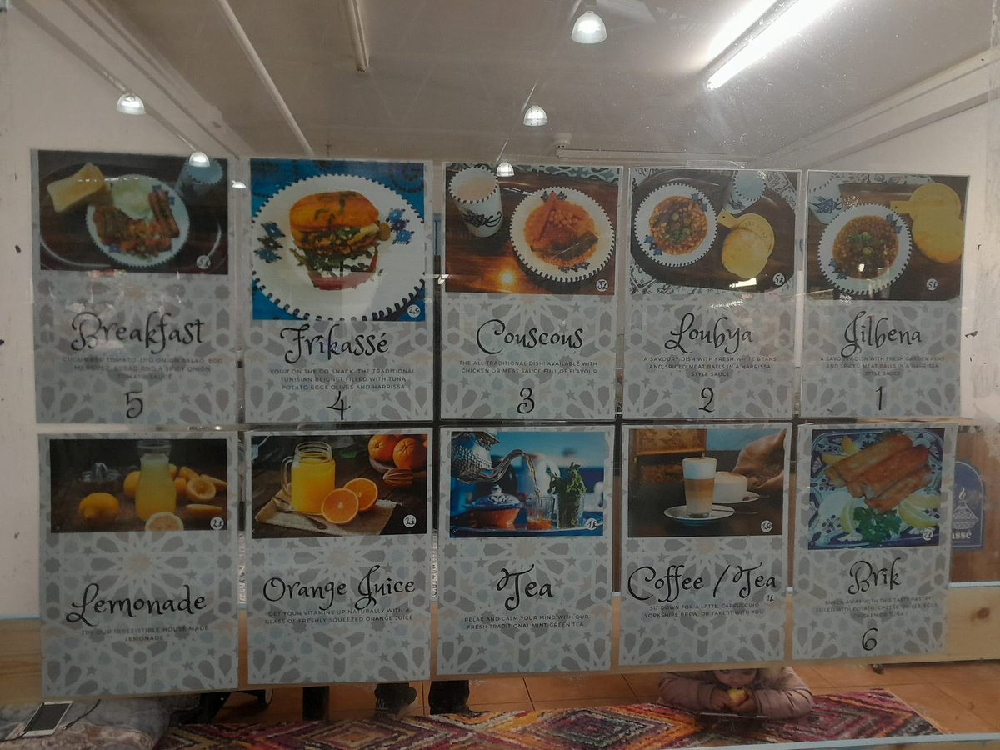
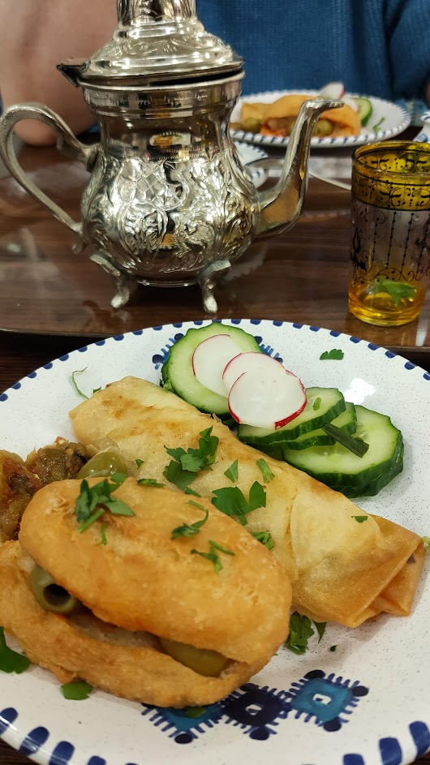
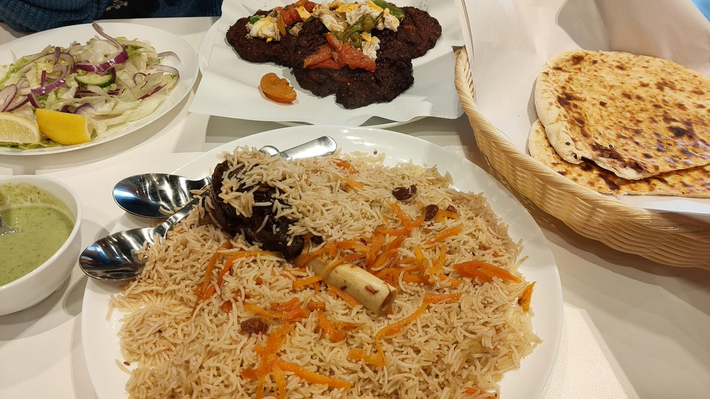
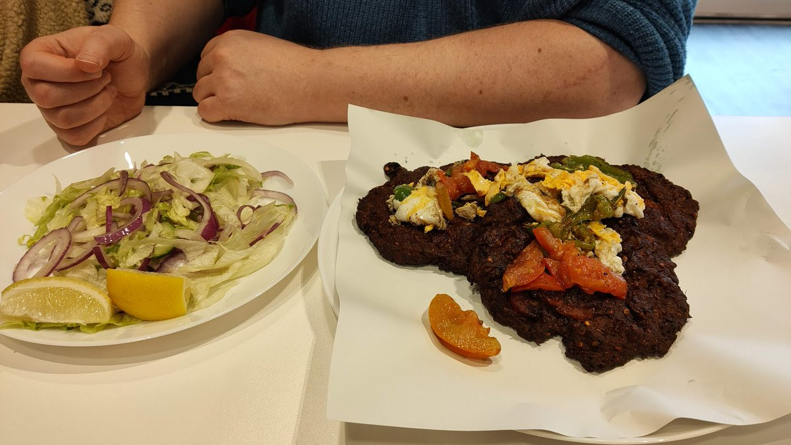
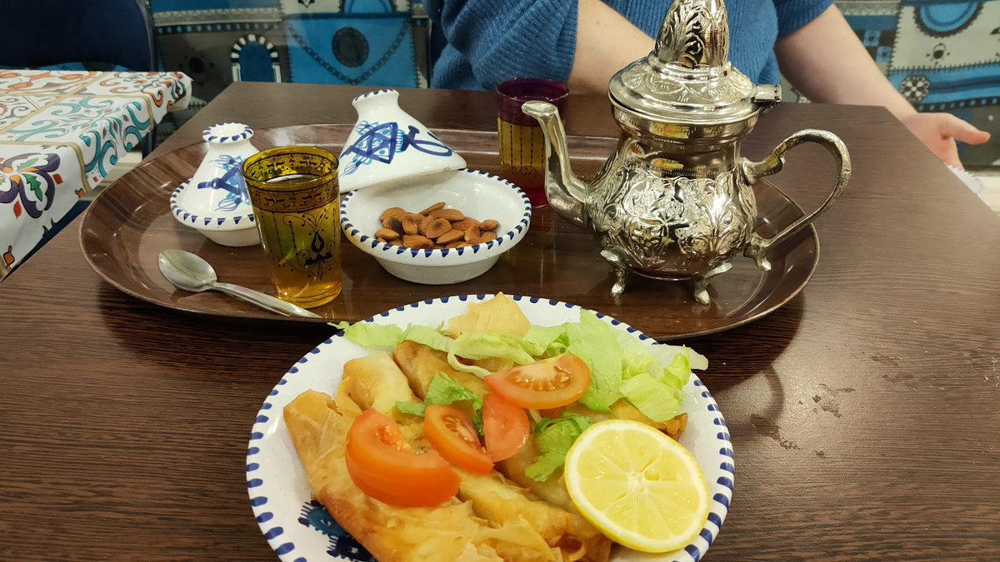
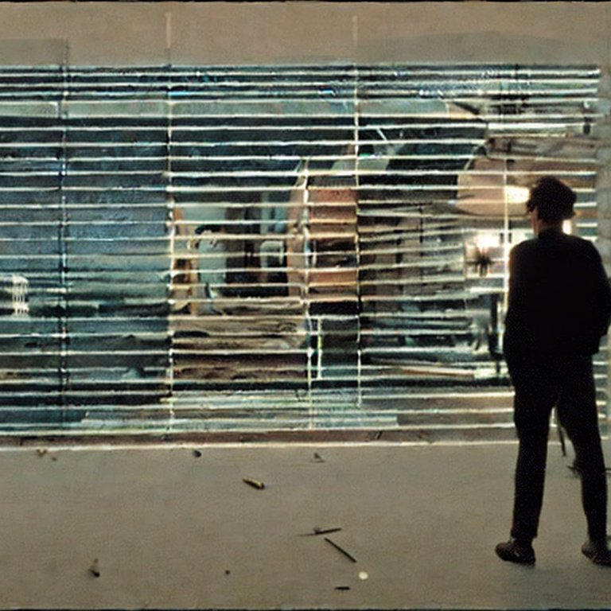
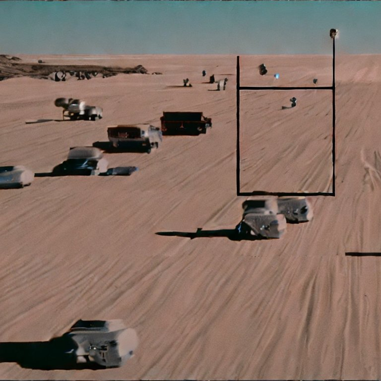
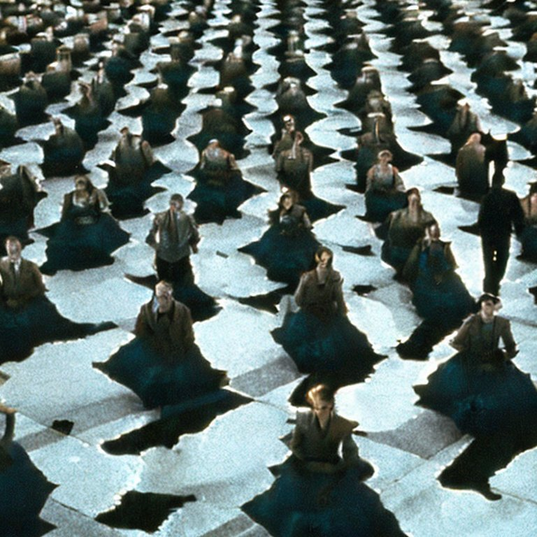

Installed a bunch of steam next fest demos.
I don't actually have to play them too do I?
Also tonight is the #Bradford #GameDev meetup in a pub.
7-9pm upstairs at The Turls Green.

https://twitter.com/wetgenes/status/1623080257124196352 My site seems to have been banned by twitter so replace (dot) manually i guess.
This is your 24ish hour notice!
Tomorrow is the #Bradford #GameDev meetup in a pub.
7-9pm upstairs at the Turls Green.
https://twitter.com/LeedsGamesToast/status/1620713313440264192 @LeedsGamesToast @huddevfield @shindigdev Next Badonkadonk is on Wednesday 8th which is also during the Yorkshire games festival https://www.scienceandmediamuseum.org.uk/whats-on/yorkshire-games-festival @YorksGamesFest
A Badonkadonk is when you go for a Donk in BD.

https://twitter.com/tim_waters/status/1620451360083963904 @tim_waters Yup that was us, we tried the Frikasse and Brik with some mint Tea, ( so a sort of spicy tuna stuffed donut and cheesy spring roll. ) Found this menu photo before we went. 
We've had 3 new food places open in central #Bradford the last week.
Caribbean "Kokobay" by Sunbridge Wells.
"Abaseens" Peshawari Chapli Kebab just up Manningham lane.
Tunisian "Frikasse" cafe at the back of Oastler market.
Have tried them all, AAAAA+++++ would eat again. 



I Don't know why it only just occurred to me, but, of course if you do a two pass fbo blur using diagonals you get nice diamond artefacts instead of boring squares from axis alignment.
A 70s style Brain Drain you say?
https://www.youtube.com/watch?v=7YHrCAQ1Dlg&ab_channel=TheYesterdayMachine
https://twitter.com/CalinLeafshade/status/1615160849022259201 @CalinLeafshade Most programming is script kiddies trying to glue two libraries they do not understand together, so, mostly that.
Also fairly simple programming concepts, since I've forgotten exactly what the language I'm currently using expects.
The only correct and proper use of AI Art is to regenerate all the dream sequences in "Until the End of the World" so it is less of an 80s quantized video effect.
After that we can just turn it off. 


This is your 90 minute warning (which is just enough time to watch a film or maybe half an Avatar) .
The #Bradford #GameDev #MeetUp in a pub is tonight at 7pm upstairs at The Turls Green.
Good News Everybody.
We will be in the pub tomorrow for the monthly #Bradford #GameDev #Meetup in a pub
https://twitter.com/52O7418/status/1612240647594954753 @52O7418 This is the fix, it can already talk to the server, next stage is to setup video streaming and fighting/ditching youtube.
Some silly fizix and a live test build that mostly works in browser https://wetgenes.com/test/unzone/index.html
If the Y2K problem was fixed by adding letters. A perfectly reasonable and overlooked solution.
Then the year 2000 would become 199A and 2001 would be 199B and so on.
I have performed the appropriate calculations for 2023 and would like to wish everyone a happy ...
... 199X
This is good, first area is wonderful, the clues for progress being glimpses of areas you recognise is a damn fine addition to the mapless souls like. https://twitter.com/EpicGames/status/1608130923605774336
This looks like something to spend the steam xmas pennies on. https://twitter.com/WhatsOnSteam/status/1607709072287047682